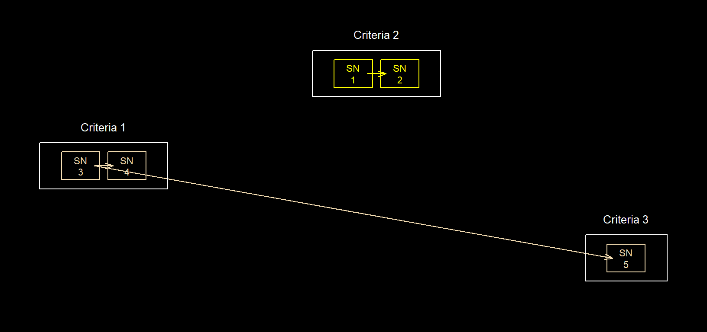
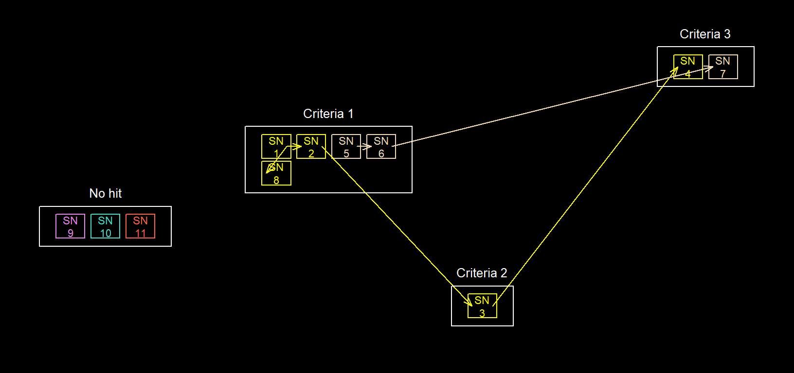

record_group.RmdLinking multiple datasets to consolidate information is a common task in research, particularly for those involving the use of “big data”. Deterministic record linkage is the simplest and most common method of record linkage however, its accuracy relies on data quality. Too many incorrect or missing values will often provide an unacceptable number of false matches or mismatches.
This function aims to provide a simple, multistage and flexible implementation of deterministic record linkage which tries to improve the linkage of datasets with missing or incorrect group identifiers e.g. customer, patient or admission codes. In such instances, alternative identifiers like dates, names, height or other attributes are used in a specified order of preference.
Each argument in record_group() controls separate aspects of the linkage process. Different combinations of options can be used to link datasets in a variety of ways. Examples of these include;
criteria
criteria and one (or more) matching sub_criteria. See record matching
Record linkage is done in stages. A match at each stage is considered more relevant than matches at subsequent stages. Matching records are assigned a unique group ID. The group ID is essentially the record ID (sn) of one of the matching records. Therefore, a familiar record ID (sn) can prove useful.
There are matching criteria (column) for each stage. These are passed to the function as column names. The argument supports quasiquotation.
sub_criteria are additional matching conditions (columns) that can be paired with each criteria. This is provided as a list of named vectors. Each named vector contains a set of column names. When a sub_criteria is used, records will only be assigned to the same group ID if they match on the criteria, and at least one named column in each sub_criteria.
Each sub_criteria should be paired with a corresponding criteria. To do this, the vector name for each sub_criteria should be - "s" followed by the corresponding criteria number e.g. "s1" or "s4". When a criteria is paired to more than one sub_criteria, include a suffix after the criteria number e.g. "s1a", "s1b" and "s1c" (See examples). Any sub_criteria not paired with a criteria will be ignored. The sub_criteria argument does not support quasiquotation.
At each stage, the function prints the number of records that were assigned a group ID and how many groups have only one record.
library(diyar);
data(patient_list);
dbs <- patient_list[c("forename","surname","sex")]; dbs
#> forename surname sex
#> 1 James Green M
#> 2 ESTHER Kulmar F
#> 3 OBI F
#> 4 Jamey Green M
#> 5 Daniel Kulmar M
#> 6 Henry OBI M
# 1 stage <- Matching surname only
dbs$pids_a <-record_group(dbs, criteria = surname, to_s4 = T)
#>
#> Group criteria 1 - `surname`
#> 6 of 6 record(s) have been assigned a group ID. 0 record(s) not yet grouped.
#> 0 record(s) with unique group IDs untagged for possible matching in the next stage. The number of records not yet grouped is now 0.
#>
#> Record grouping complete - 0 record(s) assigned a group unique ID.
# 2 stage - Matching surname, then matching sex
dbs$pids_b <- record_group(dbs, criteria = c(surname, sex), display = F, to_s4 = T)
#> Record grouping complete - 0 record(s) assigned a group unique ID.
dbs
#> forename surname sex pids_a pids_b
#> 1 James Green M P.1 (CRI 01) P.1 (CRI 01)
#> 2 ESTHER Kulmar F P.2 (CRI 01) P.2 (CRI 01)
#> 3 OBI F P.3 (CRI 01) P.3 (CRI 01)
#> 4 Jamey Green M P.1 (CRI 01) P.1 (CRI 01)
#> 5 Daniel Kulmar M P.2 (CRI 01) P.2 (CRI 01)
#> 6 Henry OBI M P.3 (CRI 01) P.3 (CRI 01)
# Note that exact matching is case sensitive. See range matching.The choice and ordering of column names in criteria and sub_criteria determines the relevance of matches. This flexibility allows you to link records in different ways. However, you should always consider the most practical combination to get more true matches than false one.
For example, in patient_list above, linking on surnames and then sex (pid_b) leads to a different result compared to when linking on sex before surnames (pid_c) (See Record group expansion). In pid_b, a match on the individual’s surname was considered more relevant than a match on their sex. The opposite was the case for pid_c.
dbs$pids_c <- record_group(dbs, criteria = c(sex, surname), display = F, to_s4 = T)
#> Record grouping complete - 0 record(s) assigned a group unique ID.
dbs
#> forename surname sex pids_a pids_b pids_c
#> 1 James Green M P.1 (CRI 01) P.1 (CRI 01) P.1 (CRI 01)
#> 2 ESTHER Kulmar F P.2 (CRI 01) P.2 (CRI 01) P.2 (CRI 01)
#> 3 OBI F P.3 (CRI 01) P.3 (CRI 01) P.2 (CRI 01)
#> 4 Jamey Green M P.1 (CRI 01) P.1 (CRI 01) P.1 (CRI 01)
#> 5 Daniel Kulmar M P.2 (CRI 01) P.2 (CRI 01) P.1 (CRI 01)
#> 6 Henry OBI M P.3 (CRI 01) P.3 (CRI 01) P.1 (CRI 01)Considering the criteria used for each, both results are logically correct but pids_b is not the most practical option given the dataset. For instance, records 3 and 6 which have been grouped together could actually be cousins not the same individual. A better combination would be forename at stage 1, followed by surname and sex at stage 2. See pid_d below;
dbs_2 <- patient_list; dbs_2
#> rd_id forename surname sex
#> 1 1 James Green M
#> 2 2 ESTHER Kulmar F
#> 3 3 OBI F
#> 4 4 Jamey Green M
#> 5 5 Daniel Kulmar M
#> 6 6 Henry OBI M
dbs_2$cri_2 <- paste(dbs_2$surname, dbs_2$sex,sep="-")
dbs_2$pid_d <- record_group(dbs_2, rd_id, c(forename, cri_2), display = F, to_s4 = T)
#> Record grouping complete - 4 record(s) assigned a group unique ID.
dbs_2
#> rd_id forename surname sex cri_2 pid_d
#> 1 1 James Green M Green-M P.1 (CRI 02)
#> 2 2 ESTHER Kulmar F Kulmar-F P.2 (No Hit)
#> 3 3 OBI F OBI-F P.3 (No Hit)
#> 4 4 Jamey Green M Green-M P.1 (CRI 02)
#> 5 5 Daniel Kulmar M Kulmar-M P.5 (No Hit)
#> 6 6 Henry OBI M OBI-M P.6 (No Hit)As mentioned earlier, at each stage of record linkage, a sub_criteria can be used to supply additional matching conditions. Just like criteria, any column in the dataset can be used as a sub_criteria.
Below are examples of record linkage using different combinations of the same criteria and sub_criteria
data(Opes); Opes
#> rd_id name department hair_colour date_of_birth db_pt1 db_pt2 db_pt3
#> 1 1 Ope Procurement Brown 23/03/1986 23/03 23/1986 03/1986
#> 2 2 Ope Security Brown 23/03/1986 23/03 23/1986 03/1986
#> 3 3 Ope Security Brown 23/03/1968 23/03 23/1968 03/1968
#> 4 4 Ope Publishing Green 01/02/1985 01/02 01/1985 02/1985
#> 5 5 Ope Publishing Teal 02/01/1985 02/01 02/1985 01/1985
#> 6 6 Ope Publishing Grey 11/03/1964 11/03 11/1964 03/1964
#> 7 7 Ope Publishing White 11/03/1964 11/03 11/1964 03/1964
#> 8 8 Ope Procurement Black 11/10/1985 11/10 11/1985 10/1985
# 1 stage linkage
# stage 1 - name AND (department OR hair_colour OR date_of_birth)
Opes$pids_a <- record_group(Opes, criteria = name,
sub_criteria = list(
"s1a"=c("department","hair_colour","date_of_birth")),
display = F, to_s4 = T)
#> Record grouping complete - 0 record(s) assigned a group unique ID.
Opes[c("name","department","hair_colour","date_of_birth","pids_a")]
#> name department hair_colour date_of_birth pids_a
#> 1 Ope Procurement Brown 23/03/1986 P.1 (CRI 01)
#> 2 Ope Security Brown 23/03/1986 P.1 (CRI 01)
#> 3 Ope Security Brown 23/03/1968 P.1 (CRI 01)
#> 4 Ope Publishing Green 01/02/1985 P.4 (CRI 01)
#> 5 Ope Publishing Teal 02/01/1985 P.4 (CRI 01)
#> 6 Ope Publishing Grey 11/03/1964 P.4 (CRI 01)
#> 7 Ope Publishing White 11/03/1964 P.4 (CRI 01)
#> 8 Ope Procurement Black 11/10/1985 P.1 (CRI 01)
# 1 stage linkage
# stage 1 - name AND ((department OR hair_colour) AND (date_of_birth))
Opes$pids_b <- record_group(Opes, criteria = name,
sub_criteria = list(
"s1a"=c("department","hair_colour"),
"s1b"=c("date_of_birth")),
display = F, to_s4 = T)
#> Record grouping complete - 4 record(s) assigned a group unique ID.
Opes[c("name","department","hair_colour","date_of_birth","pids_b")]
#> name department hair_colour date_of_birth pids_b
#> 1 Ope Procurement Brown 23/03/1986 P.1 (CRI 01)
#> 2 Ope Security Brown 23/03/1986 P.1 (CRI 01)
#> 3 Ope Security Brown 23/03/1968 P.3 (No Hit)
#> 4 Ope Publishing Green 01/02/1985 P.4 (No Hit)
#> 5 Ope Publishing Teal 02/01/1985 P.5 (No Hit)
#> 6 Ope Publishing Grey 11/03/1964 P.6 (CRI 01)
#> 7 Ope Publishing White 11/03/1964 P.6 (CRI 01)
#> 8 Ope Procurement Black 11/10/1985 P.8 (No Hit)
# 1 stage linkage
# stage 1 - name AND ((department OR hair_colour) AND (dd-mm OR dd-yyyy OR mm-yyyy))
Opes$pids_c <- record_group(Opes, criteria = name,
sub_criteria = list(
"s1a"=c("department","hair_colour"),
"s1b"=c("db_pt1","db_pt2","db_pt3")),
display = F, to_s4 =T)
#> Record grouping complete - 3 record(s) assigned a group unique ID.
Opes[c("name","department","hair_colour","date_of_birth","pids_c")]
#> name department hair_colour date_of_birth pids_c
#> 1 Ope Procurement Brown 23/03/1986 P.1 (CRI 01)
#> 2 Ope Security Brown 23/03/1986 P.1 (CRI 01)
#> 3 Ope Security Brown 23/03/1968 P.1 (CRI 01)
#> 4 Ope Publishing Green 01/02/1985 P.4 (No Hit)
#> 5 Ope Publishing Teal 02/01/1985 P.5 (No Hit)
#> 6 Ope Publishing Grey 11/03/1964 P.6 (CRI 01)
#> 7 Ope Publishing White 11/03/1964 P.6 (CRI 01)
#> 8 Ope Procurement Black 11/10/1985 P.8 (No Hit)
# 1 stage linkage
# stage 1 - name AND ((department) AND (hair_colour) AND (dd-mm OR dd-yyyy OR mm-yyyy))
Opes$pids_d <- record_group(Opes, criteria =name,
sub_criteria = list(
"s1a"=c("department"),
"s1c"=c("hair_colour"),
"s1b"=c("db_pt1","db_pt2","db_pt3")),
display = F, to_s4 = T)
#> Record grouping complete - 6 record(s) assigned a group unique ID.
Opes[c("name","department","hair_colour","date_of_birth","pids_d")]
#> name department hair_colour date_of_birth pids_d
#> 1 Ope Procurement Brown 23/03/1986 P.1 (No Hit)
#> 2 Ope Security Brown 23/03/1986 P.2 (CRI 01)
#> 3 Ope Security Brown 23/03/1968 P.2 (CRI 01)
#> 4 Ope Publishing Green 01/02/1985 P.4 (No Hit)
#> 5 Ope Publishing Teal 02/01/1985 P.5 (No Hit)
#> 6 Ope Publishing Grey 11/03/1964 P.6 (No Hit)
#> 7 Ope Publishing White 11/03/1964 P.7 (No Hit)
#> 8 Ope Procurement Black 11/10/1985 P.8 (No Hit)Note that using sub_criteria costs additional processing time, so it should be avoided when not needed. For example, the two implementations below (pids_e and pids_f) will lead to the same outcome but pids_f will take less time.
# 1 stage linkage
# stage 1 - name AND ((department) AND (hair_colour) AND (date_of_birth))
Opes$pids_e <- record_group(Opes, criteri = name,
sub_criteria = list(
"s1a"=c("department"),
"s1b"=c("hair_colour"),
"s1c"=c("date_of_birth")),
display = T, to_s4 = T)
#>
#> Group criteria 1 - `name`
#> Matching criteria 1: iteration 2
#> Matching criteria 1: iteration 3
#> Matching criteria 1: iteration 4
#> Matching criteria 1: iteration 5
#> Matching criteria 1: iteration 6
#> Matching criteria 1: iteration 7
#> Matching criteria 1: iteration 8
#> 8 of 8 record(s) have been assigned a group ID. 0 record(s) not yet grouped.
#> 8 record(s) with unique group IDs untagged for possible matching in the next stage. The number of records not yet grouped is now 8.
#>
#> Record grouping complete - 8 record(s) assigned a group unique ID.
Opes$cri <- paste(Opes$name, Opes$date_of_birth, Opes$department, Opes$hair_colour, sep="-")
# 1 stage linkage
# stage 1 - name AND department AND hair_colour AND date_of_birth
Opes$pids_f <- record_group(Opes, criteria = cri, display = T, to_s4 =T)
#>
#> Group criteria 1 - `cri`
#> 8 of 8 record(s) have been assigned a group ID. 0 record(s) not yet grouped.
#> 8 record(s) with unique group IDs untagged for possible matching in the next stage. The number of records not yet grouped is now 8.
#>
#> Record grouping complete - 8 record(s) assigned a group unique ID.
Opes[c("name","department","hair_colour","date_of_birth","pids_e","pids_f")]
#> name department hair_colour date_of_birth pids_e pids_f
#> 1 Ope Procurement Brown 23/03/1986 P.1 (No Hit) P.1 (No Hit)
#> 2 Ope Security Brown 23/03/1986 P.2 (No Hit) P.2 (No Hit)
#> 3 Ope Security Brown 23/03/1968 P.3 (No Hit) P.3 (No Hit)
#> 4 Ope Publishing Green 01/02/1985 P.4 (No Hit) P.4 (No Hit)
#> 5 Ope Publishing Teal 02/01/1985 P.5 (No Hit) P.5 (No Hit)
#> 6 Ope Publishing Grey 11/03/1964 P.6 (No Hit) P.6 (No Hit)
#> 7 Ope Publishing White 11/03/1964 P.7 (No Hit) P.7 (No Hit)
#> 8 Ope Procurement Black 11/10/1985 P.8 (No Hit) P.8 (No Hit)At each stage of record linkage, records are either assigned a new group ID or inherit an existing one. The following scenario explain how these happen;
Existing group IDs can be inherited but will not be overwritten. This is because groups formed at earlier stages are considered more “certain” than those formed at subsequent stages. Therefore, it’s worth reiterating that record_group() expects the criteria to be listed in order of decreasing relevance.
Example 1 - patient_list
Figure 1: Record group expansion
data(patient_list_2); patient_list_2
#> rd_id forename surname sex
#> 1 1 Jefferson Male
#> 2 2 Jefferson Female
#> 3 3 Tomi Abdul Male
#> 4 4 Tomi Abdulkareem Female
#> 5 5 <NA> <NA> Male
patient_list_2$pids_a <- record_group(patient_list_2, rd_id, c(forename, surname, sex), to_s4 = T, display = F)
#> Record grouping complete - 0 record(s) assigned a group unique ID.
patient_list_2
#> rd_id forename surname sex pids_a
#> 1 1 Jefferson Male P.1 (CRI 02)
#> 2 2 Jefferson Female P.1 (CRI 02)
#> 3 3 Tomi Abdul Male P.3 (CRI 01)
#> 4 4 Tomi Abdulkareem Female P.3 (CRI 01)
#> 5 5 <NA> <NA> Male P.3 (CRI 03)
3). Records 1 and 2 are excluded from grouping at this stage because of missing values. Record 5 is not assigned a group ID because it doesn’t match any other record.1). Records 3 and 4 do not match on surnames but remain grouped together since they’ve already matched on forenames, which is more “certain” as listed in criteria. Record 5 is still not assigned a group ID because it doesn’t match any other record on surnames.3) because that was assigned at stage 1 ("CRI 01") as opposed to record 2’s group ID which was assigned at stage 2 ("CRI 02").Example 2
Figure 2: Record group expansion
df <- data.frame(
forename = c("John", "John", "Jon", "", "Mary","Mary","Mariam", "John", "Henry", "Obinna", "Tomi"),
surname = c("Swan", "Swanley", "Swanley", "", "Jane","Jan","Janet", "Swan", "Henderson", "Nelson", "Abdulkareem"),
age = c(12,11,10,10,5,6,6,12,30,31, 2500)
)
df$pids_a <- record_group(df, criteria = c(forename, surname, age), to_s4 = T, display = F)
#> Record grouping complete - 3 record(s) assigned a group unique ID.
df
#> forename surname age pids_a
#> 1 John Swan 12 P.01 (CRI 01)
#> 2 John Swanley 11 P.01 (CRI 01)
#> 3 Jon Swanley 10 P.01 (CRI 02)
#> 4 10 P.01 (CRI 03)
#> 5 Mary Jane 5 P.05 (CRI 01)
#> 6 Mary Jan 6 P.05 (CRI 01)
#> 7 Mariam Janet 6 P.05 (CRI 03)
#> 8 John Swan 12 P.01 (CRI 01)
#> 9 Henry Henderson 30 P.09 (No Hit)
#> 10 Obinna Nelson 31 P.10 (No Hit)
#> 11 Tomi Abdulkareem 2500 P.11 (No Hit)
1). The other records still do not match any other record at this stage and so remain unassigned.1). Similarly, record 7 inherits record 6’s group ID for the same reason.Records with missing values for a particular criteria are excluded from that stage of record linkage. If a record has missing values for every listed criteria, it’s assigned a unique group ID at the end of the process.
It’s common for databases to use specific characters or numbers to represent missing or unknown data e.g. N/A, Nil, 01/01/1100, 111111 e.t.c. These pseudo-missing values will need to be re-coded to one of the two recognised by record_group() - NA or an empty string (""). If this is not done, the function will assume the pseudo-missing values are valid values and therefore group them together. This can cause a continuous cascade of false matches as seen below.
patient_list_2$forename <- ifelse(patient_list_2$rd_id %in% 1:3, "Nil", patient_list_2$forename)
# 2 stage linkage
# Stage 1 - forename
# Stage 2 - surname
patient_list_2$pids_b <- record_group(patient_list_2, criteria = c(forename, surname),
display = F, to_s4 =T)
#> Record grouping complete - 2 record(s) assigned a group unique ID.
patient_list_2[c("forename","surname","pids_b")]
#> forename surname pids_b
#> 1 Nil Jefferson P.1 (CRI 01)
#> 2 Nil Jefferson P.1 (CRI 01)
#> 3 Nil Abdul P.1 (CRI 01)
#> 4 Tomi Abdulkareem P.4 (No Hit)
#> 5 <NA> <NA> P.5 (No Hit)In the example above, records 1-3 are assigned a single group ID even though record 3 is clearly a different person. This issue can be addressed by recoding "Nil" to NA or "".
# Using NA as the proxy for missing value
patient_list_2$forename <- ifelse(patient_list_2$forename=="Nil", NA, patient_list_2$forename)
patient_list_2$pids_d <- record_group(patient_list_2, rd_id, c(forename, surname),
display = F, to_s4 = T)
#> Record grouping complete - 3 record(s) assigned a group unique ID.
# Using "" as the proxy for missing value
patient_list_2$forename <- ifelse(is.na(patient_list_2$forename),"",patient_list_2$forename)
patient_list_2$pids_e <- record_group(patient_list_2, rd_id, c(forename, surname),
display = F, to_s4 = T)
#> Record grouping complete - 3 record(s) assigned a group unique ID.
patient_list_2[c("forename","surname", "pids_b", "pids_d","pids_e")]
#> forename surname pids_b pids_d pids_e
#> 1 Jefferson P.1 (CRI 01) P.1 (CRI 02) P.1 (CRI 02)
#> 2 Jefferson P.1 (CRI 01) P.1 (CRI 02) P.1 (CRI 02)
#> 3 Abdul P.1 (CRI 01) P.3 (No Hit) P.3 (No Hit)
#> 4 Tomi Abdulkareem P.4 (No Hit) P.4 (No Hit) P.4 (No Hit)
#> 5 <NA> P.5 (No Hit) P.5 (No Hit) P.5 (No Hit)Sometimes an exact match might be too strict and a less exact but reasonable approximation can be used. For example in patient_list_2 above, records 3 and 4 seem to be the same individual but are not grouped together because the surnames are not an exact match. An alternative approach can be to use the surname initials or a Soundex transformation of the actual surname.
library(phonics)
patient_list_2$soundex <- soundex(patient_list_2$surname)
patient_list_2$pids_e <- record_group(patient_list_2, rd_id, c(forename, soundex),
display = F, to_s4 = T)
#> Record grouping complete - 1 record(s) assigned a group unique ID.
patient_list_2[c("forename","surname","soundex","pids_d","pids_e")]
#> forename surname soundex pids_d pids_e
#> 1 Jefferson J162 P.1 (CRI 02) P.1 (CRI 02)
#> 2 Jefferson J162 P.1 (CRI 02) P.1 (CRI 02)
#> 3 Abdul A134 P.3 (No Hit) P.3 (CRI 02)
#> 4 Tomi Abdulkareem A134 P.4 (No Hit) P.3 (CRI 02)
#> 5 <NA> <NA> P.5 (No Hit) P.5 (No Hit)For continuous data, you can use the function’s range matching feature. In range matching, numeric values are “matched” if they are within a specified range of other values. To do this, convert each value to the required range using number_line(). Then assign the actual value to the gid slot of the resulting number_line object. The number_line object can then be used as a criteria or sub_criteria. number_line objects are considered a match if they overlap. See the examples below.
Opes_c <- Opes["date_of_birth"]
Opes_c$date_of_birth
#> [1] "23/03/1986" "23/03/1986" "23/03/1968" "01/02/1985" "02/01/1985"
#> [6] "11/03/1964" "11/03/1964" "11/10/1985"
# Match on date of birth + 2 years
Opes_c$date_of_birth <- as.Date(Opes_c$date_of_birth, "%d/%m/%Y")
Opes_c$range_a <- expand_number_line(as.number_line(Opes_c$date_of_birth), (365*2), "end")
Opes_c$range_a@gid <- as.numeric(Opes_c$date_of_birth)
Opes_c$pids_a <- record_group(Opes_c, criteria = range_a, to_s4 =T)
#>
#> Group criteria 1 - `dmvr_d1`
#> Matching criteria 1: iteration 2
#> Matching criteria 1: iteration 3
#> Matching criteria 1: iteration 4
#> Matching criteria 1: iteration 5
#> Matching criteria 1: iteration 6
#> Matching criteria 1: iteration 7
#> Matching criteria 1: iteration 8
#> 8 of 8 record(s) have been assigned a group ID. 0 record(s) not yet grouped.
#> 1 record(s) with unique group IDs untagged for possible matching in the next stage. The number of records not yet grouped is now 1.
#>
#> Record grouping complete - 1 record(s) assigned a group unique ID.
Opes_c[c("date_of_birth","range_a","pids_a")]
#> date_of_birth range_a pids_a
#> 1 1986-03-23 1986-03-23 -> 1988-03-22 P.5 (CRI 01)
#> 2 1986-03-23 1986-03-23 -> 1988-03-22 P.5 (CRI 01)
#> 3 1968-03-23 1968-03-23 -> 1970-03-23 P.3 (No Hit)
#> 4 1985-02-01 1985-02-01 -> 1987-02-01 P.5 (CRI 01)
#> 5 1985-01-02 1985-01-02 -> 1987-01-02 P.5 (CRI 01)
#> 6 1964-03-11 1964-03-11 -> 1966-03-11 P.6 (CRI 01)
#> 7 1964-03-11 1964-03-11 -> 1966-03-11 P.6 (CRI 01)
#> 8 1985-10-11 1985-10-11 -> 1987-10-11 P.5 (CRI 01)
# Match on age +/- 5 years
Opes_c$age <- as.numeric(round((Sys.Date() - Opes_c$date_of_birth)/365.5)) # approximate age
Opes_c$range_b <- expand_number_line(as.number_line(Opes_c$age), 5, "both")
Opes_c$range_b@gid <- Opes_c$age
Opes_c$pids_b <- record_group(Opes_c, criteria = range_b, to_s4 =T)
#>
#> Group criteria 1 - `dmvr_d1`
#> Matching criteria 1: iteration 2
#> 8 of 8 record(s) have been assigned a group ID. 0 record(s) not yet grouped.
#> 0 record(s) with unique group IDs untagged for possible matching in the next stage. The number of records not yet grouped is now 0.
#>
#> Record grouping complete - 0 record(s) assigned a group unique ID.
Opes_c[c("age","range_b","pids_b")]
#> age range_b pids_b
#> 1 34 29 -> 39 P.1 (CRI 01)
#> 2 34 29 -> 39 P.1 (CRI 01)
#> 3 52 47 -> 57 P.3 (CRI 01)
#> 4 35 30 -> 40 P.1 (CRI 01)
#> 5 35 30 -> 40 P.1 (CRI 01)
#> 6 56 51 -> 61 P.3 (CRI 01)
#> 7 56 51 -> 61 P.3 (CRI 01)
#> 8 35 30 -> 40 P.1 (CRI 01)As a general rule, the more unique a criteria, the earlier it should be listed in criteria. Also, the set and ordering of criteria is a personal choice but should also be a practical one for any given dataset. For example, when linking a vehicular database with no existing identifier, vehicle colour alone is less practical than colour and brand name, which in turn is less practical than colour, brand name, make and model. However colour, brand name, make and model and 10 other parameters might be too strict and may need to be relaxed. On the other hand, the dataset could be so small that vehicle colour alone is a sufficient criteria. record_group() aims to minimize false mismatches due to random data entry errors or missing values. The choice and ordering of criteria and sub_criteria should balance the availability of alternative identifiers with their practicality as a group identifier.